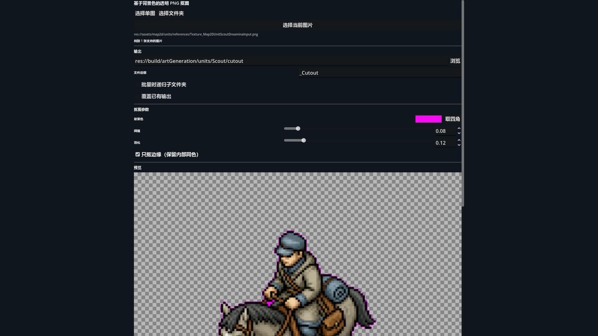

所见参数与自动化使用同一算法
Dock、单图导出、目录批处理和 headless CLI 全部调用同一个 Script_ImageMatting.gd。因此策划 / 美术在界面里调出的背景色、阈值与羽化，可以原样交给 Agent 批量运行，不存在两套近似实现。
{kind=link}

背景色默认为纯白，阈值为 0.08，羽化为 0.12，“只抠边缘”默认开启。这能去掉与画面外圈连通的白底，同时保留人物内部的白衬衫、高光或封闭白色图案。
三种输入方式，一套命名规则
选择单图
通过系统文件对话框选择一张 png、jpg/jpeg、webp、bmp 或 tga。适合精调边缘或处理一个 Provider artifact。
选择文件夹
发现目录中的受支持图片；勾选“递归子文件夹”后，会连同下级目录一起建立任务。
选择当前图片
先在 Godot“文件系统”面板点一张图片或一个文件夹，再点击该按钮。它只在编辑器环境可用，headless 下会安全返回空选区。
输出位置与后缀
输出固定为透明 PNG。目录留空时工具自动选择位置；默认文件名是“原文件名 + _Cutout + .png”。
| 选项 | 关闭时 | 开启时 |
|---|---|---|
| 批量时递归子文件夹 | 只处理输入目录第一层。 | 遍历子目录；共享输出目录时保留相对目录结构。 |
| 覆盖已有输出 | 目标存在则报告失败，不改写文件。 | 允许替换目标 PNG；正式资产使用前仍应检查版本与来源。 |
后缀不能为空，也不能含路径分隔符或保留字符。单图精确输出必须是 .png，且同一批次中的多个输入不能解析到同一个目标路径。
背景色决定目标，阈值与羽化决定过渡
| 参数 | 作用 | 调节建议 |
|---|---|---|
| 背景色 | 要去除的色键目标；默认 #FFFFFF。 | 源图本来就是均匀白底时保持纯白。若导出有轻微整体偏色，可用取色器或“取四角”。 |
| 取四角 | 计算当前预览图四个角的平均颜色并设为背景色。 | 适合四角确实都属于背景的源图；角落被人物或装饰占据时不要用。 |
| 阈值 | 与背景色距离落在阈值内的像素完全透明。 | 从 0.08 开始。背景残留时小步提高；主体被吃掉时降低。 |
| 羽化 | 在阈值之外建立半透明过渡带；0 是硬边。 | 从 0.12 开始。锯齿明显时增加；边缘发虚时减少。 |
| 只抠边缘 | 只删除从图像边界以 4 邻接连通进入的背景；羽化带可以继续传递连通。 | 默认开启。它会保留主体内部封闭的同色像素。 |
什么时候关闭“只抠边缘”
只有主体内部存在必须挖空、且被前景完全包围的同色孔洞时，才切换到全局色键。全局色键会把整张图所有接近背景色的像素都变透明，因此也可能误删白色服装、眼白、高光或 UI 图案。
对白底和品红底，算法不仅计算 alpha，还会重建半透明边缘的前景 RGB，减少合成到深色地图时出现白边或粉边。源图已有 alpha 时，输出同时尊重原透明度。
预览为了快，导出为了真
拖动滑条时会在短暂去抖后刷新。预览输入最长边最多缩到 512 px，以免逐像素处理卡住 Godot；“导出透明 PNG”重新读取原文件并以全分辨率处理，预览缩放不会降低正式输出质量。
查看原图 / 抠图结果
用切换按钮做 A/B 对照。RGBA 结果铺在棋盘底上，便于看透明区、半透明边缘和是否残留整块背景。
可调预览高度
Dock 窄时可拉高预览；高度只影响界面，不改变输入、算法与导出尺寸。
| 视图 | 主要检查 |
|---|---|
| RGBA | 透明合成后的总体外观、轮廓、残底与可见毛边。 |
| R 红 | 红通道灰度；诊断品红、红色主体或边缘去污染是否异常。 |
| G 绿 | 绿通道灰度；辅助区分纯白与品红背景，以及绿色主体细节。 |
| B 蓝 | 蓝通道灰度；检查蓝紫色背景污染或蓝色前景损失。 |
| A 透明度 | 以不透明灰度展示 alpha：黑为透明、白为不透明、灰为羽化过渡。 |
RGBA 预览“看起来没问题”仍可能藏着过宽的半透明灰边。至少再看一次 A 通道；正式单位或图集还应合成到深色和品红背景做 QA。
批量任务先发现，再逐文件处理
- 选择输入目录需要下级目录时开启递归；工具显示发现的图片数量。
- 确定输出策略选择共享输出目录或保留自动位置，检查后缀，决定是否覆盖。
- 先用代表图调参数预览通常取批次中的一张。若不同来源背景色不同，应拆分批次。
- 开始导出工具按同一参数逐张读取全分辨率源图、处理并保存 PNG。
- 阅读汇总成功输出与错误分别记录；已有文件、读图失败或写盘失败不会被静默忽略。
批量不是“自动判断每张背景”的智能模式：背景色、阈值、羽化和边缘策略对整个批次一致。若四季图集或不同 Provider 批次的底色差异明显，分开运行更安全。
同一流程可以无界面复现
自定义参数必须写在 Godot 的 -- 之后。以下 PowerShell 示例处理一张白底图并精确指定输出：
$godot = 'C:\Users\Bentl\Downloads\Installer\Godot_v4.7-stable_win64.exe\Godot_v4.7-stable_win64_console.exe'
& $godot --headless --path . `
--script res://tools/Script_ImageMattingCli.gd -- `
--input 'C:\Art\Source.png' `
--output 'C:\Art\Texture_SourceCutout.png' `
--background '#ffffff' `
--threshold 0.08 `
--softness 0.12目录批处理可用 --input-dir、--output-dir、--recursive 和 --suffix；先加 --dry-run 只校验并打印计划输出。默认是边缘连通模式，只有确实需要全局色键时才加 --global-key。
& $godot --headless --path . `
--script res://tools/Script_ImageMattingCli.gd -- `
--input-dir 'C:\Art\Batch' `
--output-dir 'C:\Art\Cutout' `
--recursive --suffix '_Cutout' --dry-runJSON 请求文件
Agent 也可用 --request Request.json 传入 inputs、outputDir、background、threshold、softness、suffix、recursive、overwrite、dryRun 与 edgeConnectedOnly。命令行参数会在请求文件之后解析，可覆盖单项。
机器可读结果
除 --help 外，最终状态以单行 IMAGE_MATTING_RESULT {…} 输出，含 ok、processed、failed、outputs、errors 与逐文件 results；Agent 应读取 JSON 与退出码，不能只猜文件是否生成。
BTL 单元格美术编辑器的 Codex worker 会在下载白底图集后调用确定性抠图与打包；角色动画流程也用同一抠图核心处理白底参考与品红视频帧。
推荐的人工验收顺序
- 保留原始文件不要覆盖 Provider 下载源图；选择单图或从 Godot 文件系统接入。
- 先确认背景色合格白底源图保持
#FFFFFF。只有确认角落都属于背景时才点“取四角”。 - 保持“只抠边缘”先用默认阈值
0.08、羽化0.12看结果，保护内部同色区域。 - 小步调阈值与羽化先清残底，再修边缘；每次只动一个变量，避免不知道是哪项造成损失。
- 检查 RGBA 与 A确认轮廓、内部白色、封闭区域和半透明过渡。必要时再看 RGB 单通道。
- 导出全分辨率使用安全后缀，不覆盖原图；把输出放进候选 / build 区等待后续 QA。
- 放回真实场景在深色、浅色、品红或游戏地图背景上检查白边 / 粉边、比例和锚点，再决定是否成为正式资产。
- 源图与透明派生图路径不同。
- 主体内部白色或高光没有被挖空。
- A 通道边缘连续，没有孤立灰点。
- 深色底与品红底都没有明显色边。
- 正式导出尺寸与源图完全一致。
- 批量汇总中的 failed 为 0。
常见问题与边界
| 现象 | 原因 | 处理 |
|---|---|---|
| 人物内部白色变透明 | 关闭了“只抠边缘”，全局色键删除了所有近似背景色。 | 重新开启默认模式；只有必须挖空封闭孔洞时才用全局色键。 |
| 外圈还有白底 | 背景色不准、阈值太低，或背景与边缘没有连通。 | 确认源图合规，必要时取四角，小步提高阈值；封闭残底才考虑全局色键。 |
| 深色底上出现白边 / 粉边 | 羽化过宽、背景色选错，或源图有复杂光晕 / 阴影。 | 先纠正背景色并减少羽化；源图若不是均匀纯色，应退回生成而非无限放大阈值。 |
| 预览较糊 | 预览最长边限制为 512 px。 | 这是性能策略；正式导出使用全分辨率。导出后用原尺寸查看。 |
| “选择当前图片”提示没有选中项 | Godot 文件系统面板没有选中受支持图片 / 文件夹，或当前是 headless 环境。 | 先在文件系统面板点选；自动化改用 CLI。 |
| 已有输出被报告失败 | “覆盖已有输出”未勾选，这是默认保护。 | 确认目标可替换后开启 overwrite，或改后缀 / 输出目录。 |
| 目录处理速度慢 | 正式导出逐像素处理每张原分辨率图片。 | 先 dry-run 核对范围，按一致背景拆小批次，避免把无关大图纳入递归目录。 |
| CLI 返回非零退出码 | 参数、输入、输出冲突、读写或逐文件处理失败。 | 解析最后一行 IMAGE_MATTING_RESULT 的 errors，不要只重跑命令。 |
它针对已知均匀背景色做确定性抠图。复杂场景、渐变背景、烘焙地面和投影不应靠极大阈值硬抠；应退回源图 Provider，按“一张不透明纯白底源图”的契约重新生成。
本页只发布工具界面和算法用法，不发布私有生成源文件，不复制 assets/audio/ 中的 Civilization VI 对照素材。